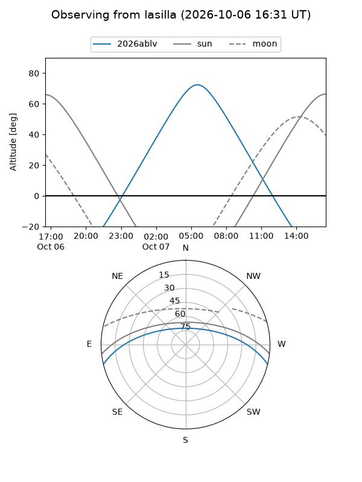
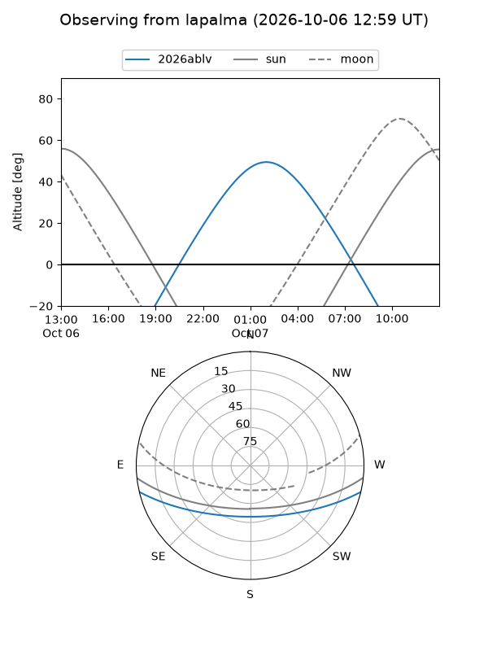
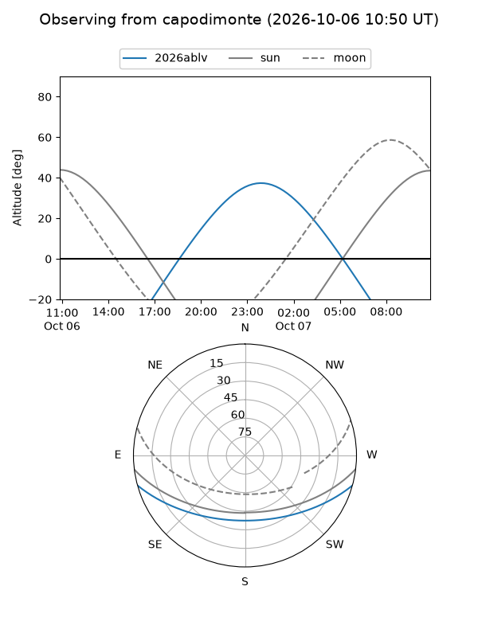
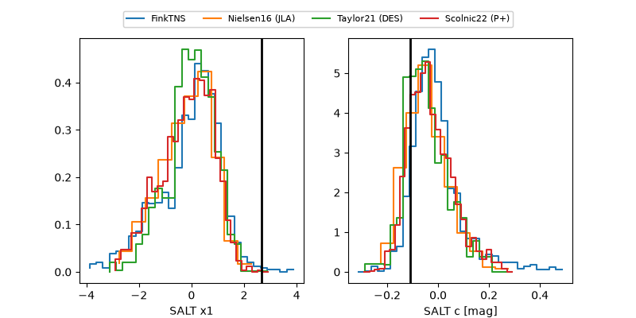

2026ablv
Target 2026ablv at 2026-10-06 11:58
Aliases and brokers:
FINK-ZTF: ztf.fink-portal.org/ZTF26absrqqy
Lasair-ZTF: lasair-ztf.lsst.ac.uk/objects/ZTF26absrqqy
ALeRCE-ZTF: alerce.online/object/ZTF26absrqqy
YSE-PZ: ziggy.ucolick.org/yse/transient_detail/2026ablv
TNS name: wis-tns.org/object/2026ablv
Direct TNS query: direct search
alt names
ZTF26absrqqy (ztf,fink_ztf)
2026ablv (tns,yse)
Coordinates:
equatorial (ra, dec) = 27.8989,-11.88991
equatorial (HMS+DMS) = 01:51:35.73,-11:53:23.68
galactic (l, b) = (168.6590,-69.22988)
Flags:
TNS type: nan
peak dt: +14.8
Photometry:
last ztfg=19.63, ztfr=20.13
6 ztfg, 10 ztfr detections
Lightcurve
Visibility



Additional plots
